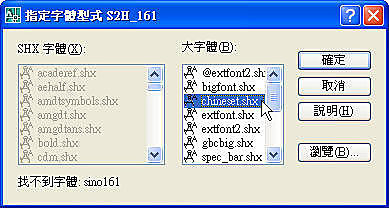
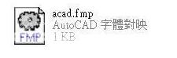
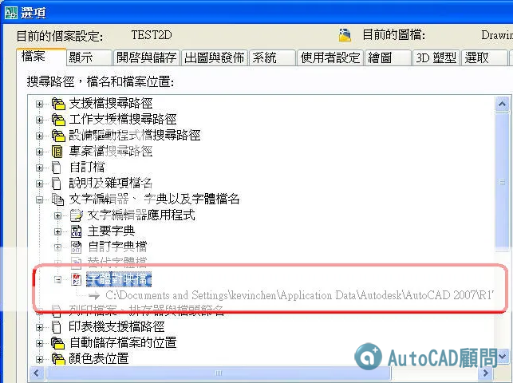
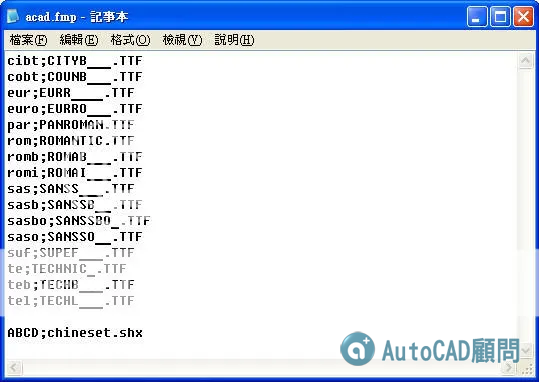

如果圖面中使用的大字體(繁體中文)目前在系統上不可用，則會有提示輸入新字體的對話方塊，通常字體若有很多種手動指定比較費時，此時可以透過 字體對映檔 來自動指定。

☆以下作法是屬於高階程式管理運用，請先試試看有問題請再提☆
關於SHX大字體字型的設定 AutoCAD 無法強制設定每個檔案在開啟後，所有的字型均為 chineset.shx 大字體字型，除非使用LISP程式來設定。
但是 AutoCAD 在找不到字型時，會自動指定替代字型，若找不到則會出現亂碼(問號)，此時可以使用 字體對映檔(acad.fmp) 來預設指定 chineset.shx 大字體字型。

※※※ AutoCAD 2000 以上版本 ※※※
動態操作步驟如下:有問題請再提!
C:\Documents and Settings\使用者帳號\Application Data\Autodesk\AutoCAD 版本\版本代號\cht\support\acad.fmp

狀況：開啟圖面時 ABCD.SHX 字型找不到，而要手動指定成 chineset.shx 字型檔。此時可以使用字體對映檔 acad.fmp : 定義轉換找不到的SHX大字體的檔案的位置。
解決方法：使用記事本開啟字體對映檔 acad.fmp ，在最下面加入 ABCD;chineset.shx ，爾後 AutoCAD 若找不到字型時會自動指定chineset.shx字型檔。

※若有很多字型請把它都寫入字體對映檔 acad.fmp ，就一勞永逸不用再手動指定字型檔了。
[影片]AutoCAD Demo 字體對映檔FMP
https://www.autocad-tw.com/t4904-topic
----------------------------------------------------
有時，您可能要確保圖面僅使用某些字體，或者可能想要將使用的字體轉換為其它字體。您可以使用任一文字編輯器來建立字體對映表，以實現這兩個目的。
您可以使用這些字體對映檔來執行共同字體標準，或使離線列印操作更便利。例如，如果您與顧問們共用圖面，您可能希望使用一個字體對映表，以便在遇到由另一字體建立的文字物件時，可以指定將其替換為何種字體。同樣，您可以使用繪圖較快的 SHX 字體來編輯圖面，然後在最後出圖時，透過設置將每個 SHX 字體轉換為對等字體的字體對映檔來切換至更複雜的字體。
字體對映檔是一個每行中都包含一個字體對映的一般 ASCII 文字 (FMP) 檔。每行都包含一個字體檔名 (其不帶有目錄名稱或路徑)，後面跟著一個分號 (;) 以及替換字體檔名。該替換檔名包括副檔名，例如 .ttf。
例如，您可以使用字體對映表中的下列項目來指定將 romanc.shx 字體檔替換為 times.ttf TrueType 字體檔：
romanc.shx；times.ttf
此程式隨附有一個預設字體對映檔。您可以使用任一 ASCII 文字編輯器來編輯此檔案。也可以使用系統變數 FONTMAP，在「選項」對話方塊中指定不同的字體對映檔。下表顯示在圖面開啟後找不到字體檔時，將使用的字體替換規則。
亞洲字母包含上千種非 ASCII 字元。為支援這類文字，此程式提供一種稱為大字體檔的特殊類型的造型定義。您可以將某個型式設定為既使用一般檔案，也使用大字體檔案。
產品隨附的亞洲語言大字體：
@extfont2.shx 日文垂直字體 (只有少數字元可以在垂直文字中正確旋轉)
bigfont.shx 日文字體，字元的子集
chineset.shx 繁體中文字體
extfont.shx 日文延伸字體，級別 1
extfont2.shx 日文延伸字體，級別 2
gbcbig.shx 簡體中文字體
whgdtxt.shx 韓文字體
whgtxt.shx 韓文字體
whtgtxt.shx 韓文字體
whtmtxt.shx 韓文字體
-----------------------------------------------------------------
資料來源:AutoCAD 2008使用者說明文件